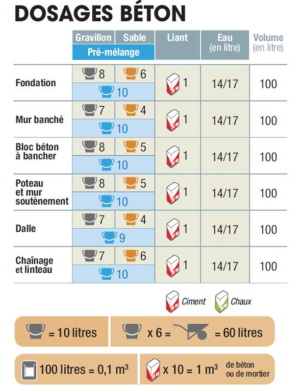
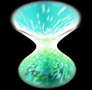

Composition de la cental nucléaire
-
composition d'une central nucleaire:

une usine nucléaire est constituée de 12 millions de tonnes de sable qui sont utilisés majoritairement pour de béton donc pour une centrale nucléaire la quantité de béton est de 400 000 de m³ de béton soit environ l’équivalent d’environ 1250 éoliennes de 3 MW.

Bien que ce ne soit pas la construction la plus fréquente, on entend souvent par tours aéroréfrigérantes (on peux de composes se mot en 2 parti aéro pour air et le reste four refroidir donc une tour qui refroidit a l'air une grande tour en béton ayant le plus souvent la forme d'un hyperboloïde de révolution(voir image a droits). L'eau à refroidir est amenée par une conduite vers le centre de la tour. À partir de cette arrivée, elle est répartie sous forme de gouttes à l'aide d'un réseau de bacs à eau et de tuyauteries percées pour y connecter des disperseurs (rampe de buses).
La forme hyperboloïde assure la rigidité de la tour et procure une meilleure résistance mécanique pour supporter les pressions dues aux vents. Contrairement à une idée largement répandue, la forme de la tour n'a pas pour but de tirer parti de l'effet Venturi. Bien que celui-ci soit présent au niveau du col de la tour, il réduit très légèrement les performances de refroidissement car il augmente la vitesse de l'air. Ceci crée plus de perte de charges ce qui réduit l'effet de tirage et donc le débit d'air globalement disponible pour le refroidissement. Cette perte de refroidissement reste néanmoins extrêmement marginale et est fortement compensée par le gain en résistance mécanique, raison pour laquelle cette forme est privilégiée.
-
comment on obtien de l'uranium 235:
L’uranium-236 est formé lors d’une simple capture radiative par un noyau d’uranium 235 par opposition aux captures qui provoquent la fission. L’uranium-233 est formé par une capture similaire par un noyau naturel de thorium, suivie de deux transformations radioactives. Cet uranium 233 est lui-même fissile.
donc plus simplement il est enrichi mais seule une petite proportion reste.
explication :À ce stade, 1 kg d'uranium naturel est composé de 993 g d'uranium 238 et de 7 g d'uranium 235. Seul l'uranium 235 est fissile mais il n'est pas en proportion suffisante pour être utilisable dans les réacteurs des centrales. L'uranium doit donc être enrichi en uranium 235, de façon à ce qu'il en comporte entre 30 et 50 g.
Mais dans le réacteur nucléaire comme il n'y a pas beaucoup d'uranium 235 produits on en fait des barres. pour creer des réactions en chaine qui cossera l'énergie thermique qui ferrat évaporer l'eau pour actionner les turbines et donc faire de l'électricité
info: la masse d'uranium dans le coeur ou réacteur peut être comparé avec la masse d'uranium dans une bombe atomique qui fait 61 kg.